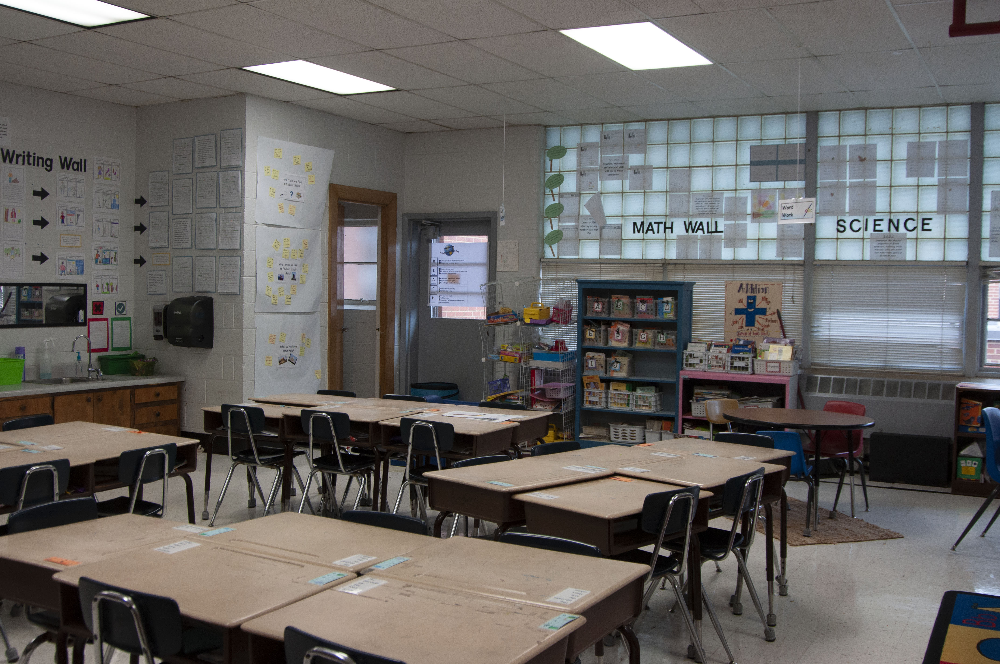
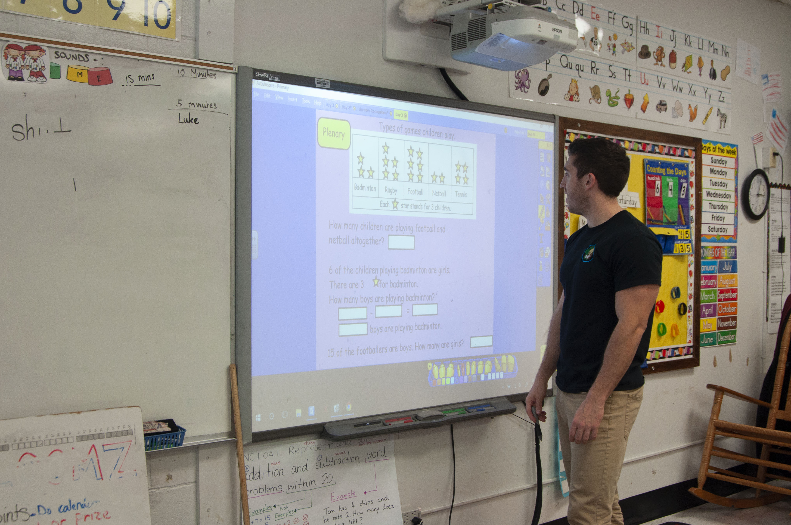

{kind=link}
Cars line up on East Haggard Avenue before Elon Elementary School's dismissal.
The Elon Elementary School community members are spending their last year within the walls of a long-established school building sorting through their materials, reminiscing on blissful memories and sharing enthusiasm for their future at a new building and location.
“This is a very welcoming and exciting event in the history of a new beginning as we open a new school building to become the home to a community full of tradition and pride,” said Elon Elementary School Principal Jack Davern.
Next fall, Elon Elementary School students, faculty, staff and families will bid farewell to their current school on East Haggard Avenue that has served them for more than 60 years and will open the door to a new beginning at 752 Walker Road.
The elementary school’s relocation is a component of a land swap agreement that began in 2016 between Elon University and the Alamance-Burlington School System. The university is fully funding the construction of a $20 million elementary school on university-owned property in exchange for Elon Elementary School’s 20-acre site, which will accommodate Elon’s strategic plan of campus expansion.
Arranging for change
To prepare for the move, which is taking place this summer, staff members are currently examining their rooms to identify and discard broken and outdated materials and to salvage only the items that will facilitate a new learning environment that fosters enthusiasm for education.
Since ABSS is covering the costs of the new school building’s interior, teachers are listing pieces of furniture, room decor and educational materials that need a replacement and additional supplies they need before the upcoming school year.
 Ian Lewis, first-grade teacher at Elon Elementary School, has been organizing files and handouts before the move.
Ian Lewis, first-grade teacher at Elon Elementary School, has been organizing files and handouts before the move.Ian Lewis, a first-grade teacher at Elon Elementary School, has been spending the school year organizing his room and sifting through his materials to decide whether his handouts, supplies and decorations will serve his 20 students in a larger space. He has been storing his most recent items in files and cabinets to save for next year.
“My thinking is this is going to need to be transported to a new school, which is a strange concept,” Lewis said. “It’s in the back of my mind all the time that I won’t be here.”
Ian Lewis, first-grade teacher at Elon Elementary School, says his new classroom will create a more welcoming learning environment.
The move has also affected the layout and aesthetic appeal of his classroom. Lewis said he chose a limited and simple display when he decorated his classroom so that he can quickly and efficiently pack up his classroom at the end of the year.
“When you prepare things in the classroom, you do it differently because you know you won’t be in the classroom next year,” Lewis said. “You’re preparing things that can then be moved.”
In addition to categorizing the interior of the current building, staff members are also planning in depth for the 2019-2020 school year. They are addressing and striving to minimize potential problems that could emerge from teaching in an unfamiliar setting.
“This particular year, we have an exceptional amount of planning and organizing to do to make sure all staff, students and parents know of the new procedures and routines that the new location and structure will require,” Davern said.
Davern has been updating the school community through newsletters, online messages and monthly school meetings so that everyone is aware of the move. Since Samet Corp. will not finish constructing the building until the spring, Davern said the uncertainty surrounding the building’s final product prevents him from fully preparing the community about the relocation this summer.
Lewis also said he needs to see the building in person to properly plan for his transition to a new setting and to brainstorm lesson plan ideas that align with the new space.
“I don’t know if I’ll be able to use the wall space for display space or if I’ll have much window space to use,” Lewis said. “At that point, you don’t know what you’re planning for.”
Despite the unpredictability of the final product, Lewis incorporated the upcoming move into one of his lessons to educate his students about the change and its impact on them. Lewis showed his students the new school location in Google Maps and highlighted the distance between the two buildings.
“When we talked about communities in social studies, I was able to explain we’ll still be in the same community but in a different place,” Lewis said.
Lewis said his students had a positive reaction but could not fully comprehend or envision learning at a new school every day.
Ian Lewis, first-grade teacher at Elon Elementary School, uses the board to teach his students language, math and social studies.
Exchanging emotions
The move has likewise not fully resonated with some of the school community members. Davern said everyone is sharing similar feelings of nostalgia and excitement about the move.
Since Davern has been working at the elementary school for eight years, he said he has created strong relationships, happy memories and beloved traditions within those school walls. Once Elon tears down the building, Davern said the community will not only lose the physical structure but also a space that offered a familiar and welcoming environment for students to learn and teachers to instruct.
“There is a rich history at Elon and many families that are connected to the school,” Davern said. “There are many memories and traditions that we have, and it will be hard to not be in this building anymore to enjoy them.”
 Elon Elementary School families pick up their children after school.
Elon Elementary School families pick up their children after school.Mary Ellen Dalhouse, a parent whose son attends fifth grade at Elon Elementary, said although her son is graduating this year, she will miss the elementary school’s proximity to Elon’s campus.
“It’s sad the school is not in the middle of campus because I think it’s a unique location for the college students and the elementary school,” Dalhouse said.
Dalhouse lives in the Colonnades Neighborhood, and her husband is Elon’s Study USA director, so she said she has taken advantage of the university's resources. She found an Elon student to tutor her son last year, and she said she regularly attends events that Elon offers.
Julie Warrick began her history with the elementary school more than 25 years ago when her oldest son started kindergarten. Now, one of her granddaughters is in fifth grade at the school, and her 2-year-old granddaughter will attend the new elementary school in the future.
Julie Warrick says she is excited for her granddaughter to learn in a newer facility with more advanced resources.
Due to her past history at the school, Warrick said the change is bittersweet. She said she will miss the fond memories at the school, but she said she is excited for her granddaughter’s future experiences at an improved school with better facilities and resources.
“I think for the students, it will be so much nicer for them,” Warrick said. “They will keep up to date with technology, which will be a better experience for them and the teachers as well.”
Lewis has been teaching at the elementary school for two years, so he said he is not as emotionally attached to the space. Since he moved from England to the United States last year, he said having to acclimate to another new space will take time.
“There are obviously some growing pains when you move, and you have to get used to it,” Lewis said. “Once everyone is settled in, it will be positive.”
Davern said the school is mostly excited about the change. He said the new location and updated facilities will create a more welcoming environment that increases students’ motivation to learn and contributes to better learning outcomes.
{kind=link}
{kind=link}
{kind=link}
{kind=link}
{kind=link}